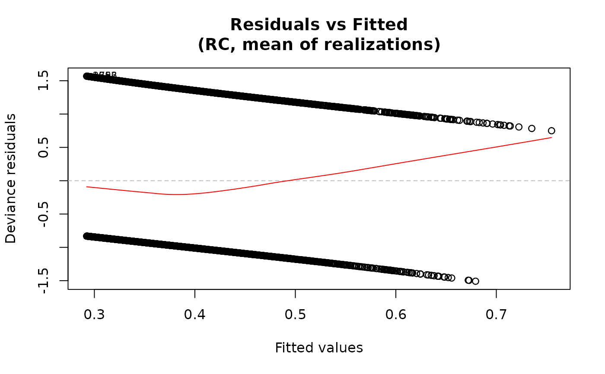
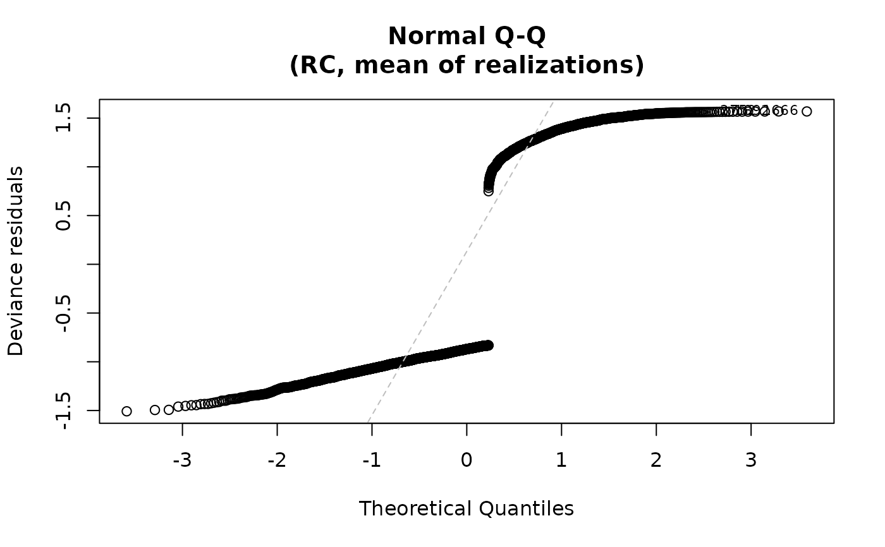
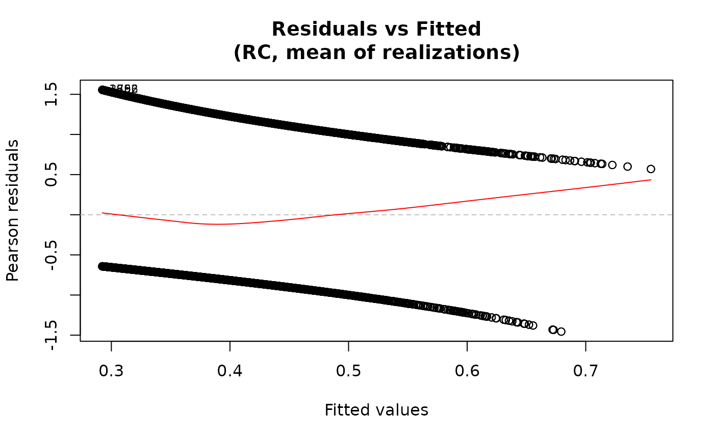
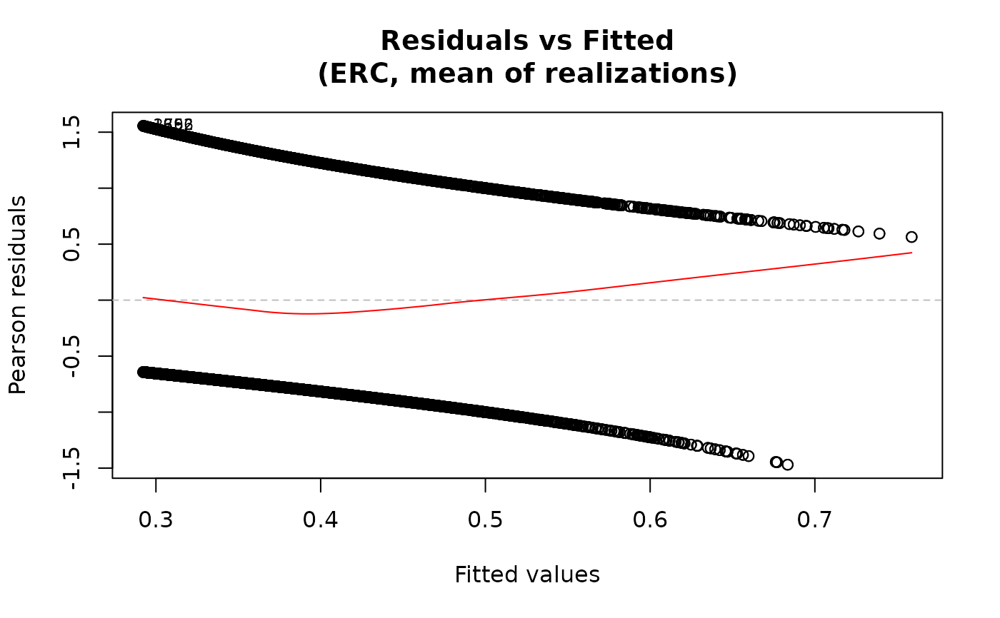
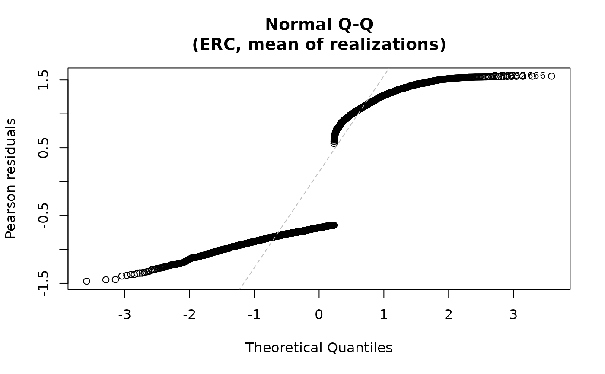
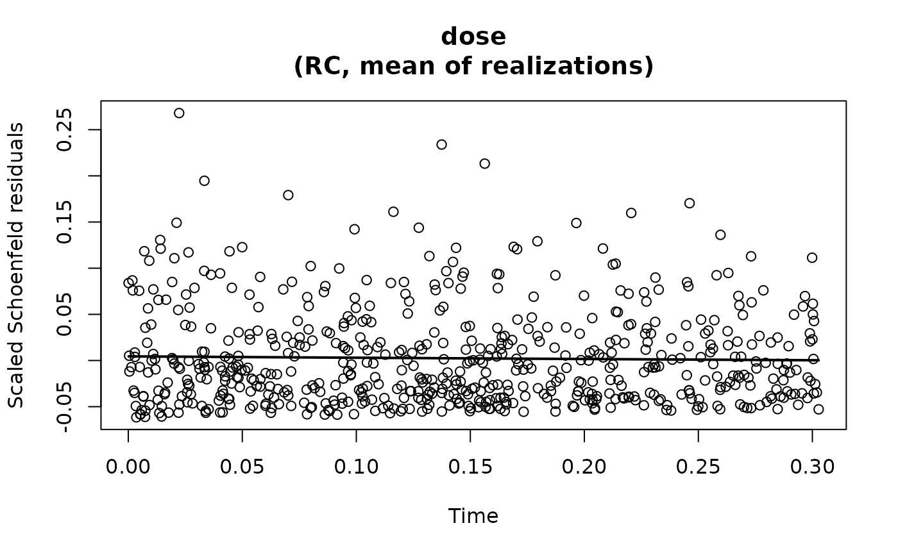

Diagnostic Plots for an amerasfit Object
plot.RdProduces diagnostic plots for a fitted amerasfit object,
including residuals versus fitted values and normal Q-Q plots.
Plots are produced for each estimation method present in the fitted
object.
Arguments
- x
A fitted model object of class
amerasfit, as returned byameras.- methods
Character vector specifying which estimation methods to produce plots for. One or more of
"RC","ERC","MCML","FMA", and"BMA". Defaults to all. Methods not present inxare skipped; an error is raised if none of the requested methods are present.- which
Character vector specifying which plots to produce. For non-
"prophaz"families, one or both of"residuals-vs-fitted"and"qq". Forfamily="prophaz","schoenfeld"produces a scaled Schoenfeld residual plot against event time. Defaults to both for non-"prophaz"families and to"schoenfeld"for"prophaz"families.- type
The type of residuals to use. One of
"pearson","deviance", or"response"for non-"prophaz"models. Forfamily="prophaz", this must be"schoenfeld". Defaults to"pearson"for non-"prophaz"families and to"schoenfeld"for"prophaz". Seeresiduals.amerasfitfor details.- dose.col
The dose realization to use for computation of residuals. If
NULL(default), a best fitting realization is determined for each method (see Details).- add.smooth
Logical. If
TRUE, a loess smooth line is added to the residuals versus fitted plot viapanel.smooth. Defaults togetOption("add.smooth", TRUE). Is not used for the Schoenfeld residual plot for which a spline is always shown, mirroring plot.cox.zph.- qqline
Logical. If
TRUE, a reference line is added to normal Q-Q plots viaqqline. Defaults toTRUE.- id.n
Integer. The number of extreme residuals to label in residuals vs fitted and normal Q-Q plots. Labels show the row index of the observation. Defaults to
3. Set to0to suppress labeling.- ask
Logical. If
TRUE, the user is prompted before each new plot. Defaults toNULL, in which case prompting occurs automatically when the number of plots exceeds the number of available panels and the session is interactive.- data
The original data frame used for fitting. Only required when the model was fitted with
keep.data=FALSE.- ...
Additional graphical arguments passed to
plot.defaultandqqnorm.
Details
If not otherwise specified, the dose realization used to compute fitted values is selected for each estimation method as follows. For RC and ERC the mean dose across realizations is used. For MCML and FMA the realization yielding the largest likelihood at the final parameter estimates is used (which for FMA corresponds to the highest model averaging weight). For BMA the realization most frequently selected by the MCMC sampler is used. The selected dose column is shown in the plot title.
For the "residuals-vs-fitted" plot, the smooth line is added
via panel.smooth using a loess smoother when add.smooth=TRUE.
For the "qq" plot, the residuals are plotted against the
theoretical quantiles of the normal distribution when qqline=TRUE. For both plots,
the id.n most extreme residuals are labeled. For family="multinomial",
one panel is produced per non-reference outcome category.
For proportional hazards models, scaled Schoenfeld residuals are drawn
against the observed event times to assess the proportional hazards assumption.
Under proportional hazards, the residuals should fluctuate randomly around
zero with no systematic trend over time. Systematic patterns or smooth
trends may indicate time-varying covariate effects and violation of the
proportional hazards assumption. These plots correspond to using
transform = "identity" in cox.zph,
in contrast to the default setting for that function, which applies a
Kaplan–Meier transformation of time.
The data must either be stored on the object (keep.data=TRUE in
ameras, the default) or supplied via the data argument.
If the model was fitted with na.exclude, diagnostic plots use the
fitted rows only; residuals and fitted values are not padded back to the
originally supplied row count.
See also
residuals.amerasfit for computing residuals,
ameras for model fitting,
confint for confidence intervals,
plot.lm for the equivalent method for linear models.
Examples
data("data", package="ameras")
dosevars <- paste0("V", 1:10)
## Binomial model
fit <- ameras(Y.binomial ~ dose(all_of(dosevars), model="ERR"),
data=data, family="binomial", methods="RC")
#> Fitting RC
## Both diagnostic plots for RC
plot(fit)
 ## Residuals vs fitted only
plot(fit, which="residuals-vs-fitted")
## Residuals vs fitted only
plot(fit, which="residuals-vs-fitted")
 ## Deviance residuals
plot(fit, type="deviance")
## Deviance residuals
plot(fit, type="deviance")


## Multiple methods
# \donttest{
fit2 <- ameras(Y.binomial ~ dose(all_of(dosevars), model="ERR"),
data=data, family="binomial", methods=c("RC", "ERC"))
#> Fitting RC
#> Fitting ERC
plot(fit2)




# }
## With keep.data=FALSE, supply data explicitly
# \donttest{
fit3 <- ameras(Y.binomial ~ dose(all_of(dosevars), model="ERR"),
data=data, family="binomial", methods="RC",
keep.data=FALSE)
#> Fitting RC
plot(fit3, data=data)

 # }
## Schoenfeld residual plot
# \donttest{
fit4 <- ameras(Surv(time, status) ~ dose(all_of(dosevars), model = "ERR"),
data = data, family = "prophaz", methods = "RC")
#> Fitting RC
plot(fit4)
# }
## Schoenfeld residual plot
# \donttest{
fit4 <- ameras(Surv(time, status) ~ dose(all_of(dosevars), model = "ERR"),
data = data, family = "prophaz", methods = "RC")
#> Fitting RC
plot(fit4)

# }